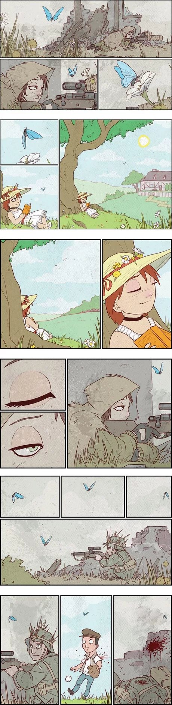
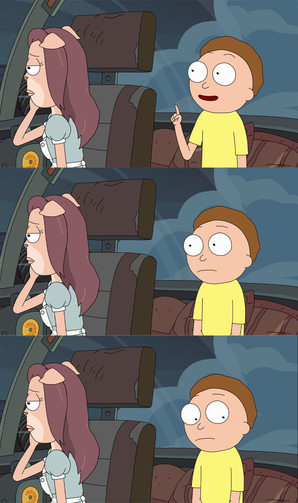

关于我什么呢，我也不知道，放一些一直以来收集的骚话吧！
你当自卑视己，切勿狂妄自大。
当你老了，回顾一生，就会发觉：什么时候出国读书、什么时候决定做第一份职业、何时选定了对象而恋爱、什么时候结婚，其实都是命运的巨变。只是当时站在三岔路口，眼见风云千樯，你作出抉择的那一日，在日记上，相当沉闷和平凡，当时还以为是生命中普通的一天。但一场巨变，已经发生了，地动山移，浑然不觉，当时是道是寻常。世上的生死荣衰，不就是在空寂之中缘起缘灭的么？
我吃了一吓，赶忙抬起头，却见一个凸颧骨，薄嘴唇，五十岁上下的女人站在我面前，两手搭在髀间，没有系裙，张着两脚，正像一个画图仪器里细脚伶仃的圆规。

什么才是一生中最正确的浪费?
大概就是顺其自然，回头看时都是回忆，不必悔恨多想，哪怕是不如意的事，也是自己人生的一部分，全部完整才是自己，世事一切无条件接受。

买书如山倒，看书如抽丝。
收藏从未停止，学习从未开始。
Life is lived on a stage, against a backdrop and props, and amidst a script and a cast not of our own choosing.
我们登上并非我们所选择的舞台，演绎并非我们选择的剧本。
谁他妈都别想这么轻易离开这个操蛋的世界。


流星从天上飞过，让我们许下美好的心愿，它不像星星那样闪烁，也不像钻石那样珍贵。但是它像火苗一样燃烧着我们那颗与世界和谐共处的心。

I held up a fistful of sand and showed it to him, asking for as many years as grains in that pile. Foolish me! I forgot to ask they be years of youth.
我抓起一把沙尘，高高举起，天真地祷告拥有如沙粒般多的年岁，却忘记说，只要青春岁月。

-
凝视自己的内心，你看到了什么？你的灵魂或许是渐暗的光，怒极而盛，百炼成钢。于更深处，你看到了什么？无论寻获什么，你都必须把持。莫可畏惧，你的本心。凝视自己的内心，你看到了什么？
你说咱长这么大容易吗。
说别人我不敢说，反正我是真不容易。
可不是。打在胎里，就随时有可能流产，当妈的一口烟就可能畸形。长慢了心脏缺损，长快了就是六指。好容易扛过十个月生出来了，一不留神，还得让产钳把头夹扁。都躲过去了，小儿麻痹、百日咳、猩红热、大脑炎还在前面等着。哭起来呛奶，走起来摔跤，摸水水烫，碰火火燎，是个东西撞上，咱就是个半死。钙多了不长个，钙少了罗圈腿。总算长到会吃饭能出门了，天上下雹子，地下跑汽车，大街小巷是个暗处就多这个坏人。你说赶谁都是个九死一生。
这都是明枪，还有暗箭呢。势利眼、冷脸子、闲言碎语、指桑骂槐；好了遭人嫉妒，差了让人瞧不起；忠厚的人家说你傻，精明的人家说你奸；冷淡了大伙儿说你傲，热情了群众说你浪；走在前头挨闷棍，走在后头全没份；这也叫活着，纯粹是练他妈一辈子轻功 ！


Let’s show them who we are.

纸上得来终觉浅，绝知此事要躬行。
路上没有灯火的时候，就点亮自己的头颅。

有一只小鸭子在排队，想和前面的鸭鸭对齐，可是怎么样都对不齐，它就嘀咕着说：「对不齐鸭对不齐鸭。」
World is powered by solitude.
Do have faith in what you’re doing.
人の命は、2万分の1でも8万分の1でもない。そうじゃなくて、そこには「1人が死んだ事件が2万件あった」ってことなんだよ。
人的性命（死亡）不该说是2万分之一，或8万分之一，它的意思是，有一个人死了这件事，发生了2万次。
你从小到大做了无数个大大小小的选择，都不能阻止你看到这句话。
所以说：如果人们都足够担心的话，那你就没什么可担心的；但如果没有人担心的话，那你就得好好担心一下了。
计算机的所有东西都是人做出来的，别人能想得出来的，我也一定能想得出来。在计算机里头，没有任何黑魔法。所有的东西，只不过是我现在不知道而已，总有一天，我会把所有的细节、所有的内部的东西全都搞明白的！
所有的离别，都是我在练习失去你。

Teaching sand to think was a mistake.
警察只是按要求训诫，主播只是按稿子播报，后台只是按上面意思删帖撤热搜。大家都认为自己是好人，一切是生活所迫。只有当每一个人都敢说“我拒绝撒谎”，“我拒绝执行”的时候，我们才不会在某一天求助无门，走投无路，像狗一样地死去。但你敢吗。你不敢。所以请记得，无论这个世界最终烂成什么样子，都是在我们的默许之下完成的。

Everything will be fine in the end, Morty, And if it isn't, it's not the end yet.
她那时候还太年轻，不知道所有命运馈赠的礼物，早已在暗中标好了价格。
我们不能随便生气。生气的时候，你会使出真本领。这样，别人就会知道你的真本领很烂。
便宜的东西只有一个优点：就是便宜。
贵的东西只有一个缺点：就是贵。
人的大脑直到 25 岁才发育完全，然而从 15 岁到 18 岁他们的大脑运用得如何，往往将决定他们的余生。
如果你非要等到新年才开始做出改变，说明这个改变对你也不太重要。
在现实的人类社会中，除非有更大的光明将它改变，否则永远存在着两种人，一个在天上，一个在地下，一个是从善的亚伯，一个是从恶的该隐。
很抱歉啊，我白天都没什么机会和你说话，只能憋到晚上给你发句晚安。但你可别小看了这两个字，它可包含着我今天清晨见到的阳光，中午看到的白云，傍晚遇见的微风，包含着我这一天每句想对你说的话。晚安。
我的眼睛很大很大，装得下高山，装得下大海，装得下蓝天，装得下整个世界；我的眼睛很小很小，有时遇到心事，就连两行泪，也装不下。
最痛苦的是什么呢？你恰巧有一点天赋，够你去觊觎天才们那片殿堂，却不够你进入。你在门前徘徊，却敲不开那扇门。你颓然而坐，却隐隐约约听到殿堂内传来一声叹息：「我好菜啊」。
其实，你觉得能觊觎也是错觉，你只是能大概理解对一些科学理论的通俗解释。
我们不能吹嘘自己设置的独特密码，真是太可惜了。
前路虽长，尤可期许。
每当成年人想要改变生活、逆转状态时，会不约而同做一件事：（再次开始）学英语。

我也不知道喜欢你什么，只是你不在的时候就会想你，想到你的每一个分钟我都会变得开心，这就是我最单纯的想法。如果只是单纯喜欢你的某一点的话，那就是有条件的喜欢而已，假使有一天那个条件突然发生了改变，那我对你得喜欢是不是应该就会变？所以我喜欢的不是你的某个什么，而是你的一切和每个和你在一起的瞬间。
我告诉你我喜欢你，并不是一定要和你在一起，只是希望今后的你，在遭遇人生低谷的时候，不要灰心，至少曾经有人被你的魅力所吸引，曾经是，以后也会是。
我永远喜欢你，不是说我会十年二十年一辈子都喜欢你，而是指，我这一刻喜欢你的程度，让我有勇气说出来我永远喜欢你。
但愿我能给你带来快乐，同时，又反射到我身上。
你无法控制其他人的脾气，但你可以保持一颗冷静的头脑。

没有你在床真的没什么好赖的。
茫茫人海我们能相遇，缘分占百分之十，我长得好看占百分之九十。
不要前行！前面是无边的森林：古老的树现着野兽身上的斑纹，半生半死的藤蟒一样交缠着，密叶里漏不下一颗星星。你将怯怯地不敢放下第二步，当你听见了第一步空寥的回声。
事实上，机场比婚礼现场见证了更多真挚的接吻，医院的墙壁比教堂聆听了更多的祷告。
长夜将至，我从今开始守望，至死方休。我将不娶妻、不封地、不生子。我将不戴宝冠，不争荣宠。我将尽忠职守，生死於斯。我是黑暗中的利剑，长城上的守卫。我是抵御寒冷的烈焰，破晓时分的光线，唤醒眠者的号角，守护王国的坚盾。我将生命与荣耀献给守夜人，今夜如此，夜夜皆然。
年轻有年轻的代价。
智商不如人没什么可耻的。只是要承认这一点有点困难。
道阻且长，行则将至。
你一直兼容，用户就一直觉得没问题，用户就会一直用，用户一直用，你就要一直兼容。
普通人负责普通就行了。
碎片化时间，听起来像一种能撕裂时空的超能力。
觉得自己能力不足无法战胜黑暗怎么办？
目所能及又岂能是全部呢？
怕什么真理无穷，进一寸有进一寸的欢喜。

梦境和死亡，都无定所，无处可去，终将被遗忘，我们身在此处，但没有人会记得，万物皆逝，仅剩夜晚，再见。

口才不好的人，总是在夜晚床上躺着时，才想到当时应该怎样反驳别人的话。

遇到喜欢的东西，就把它买下来。钱并不是真的花掉了，只是换一种方式，陪伴在你的身边。
我不看星星，也不说想你。这样星星和你都蒙在鼓里。